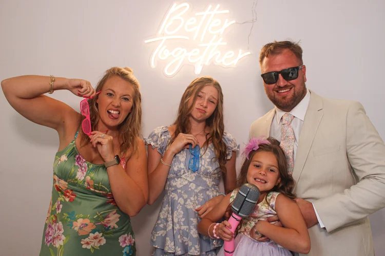
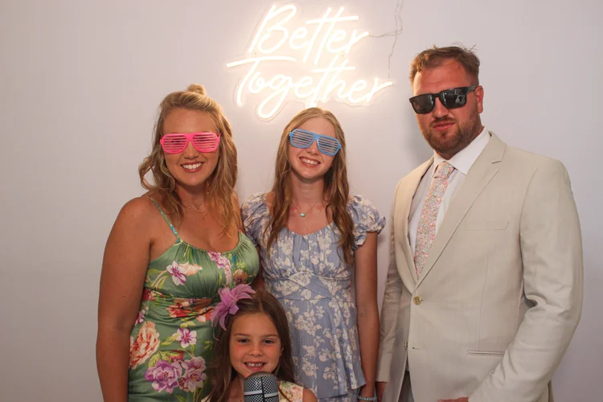
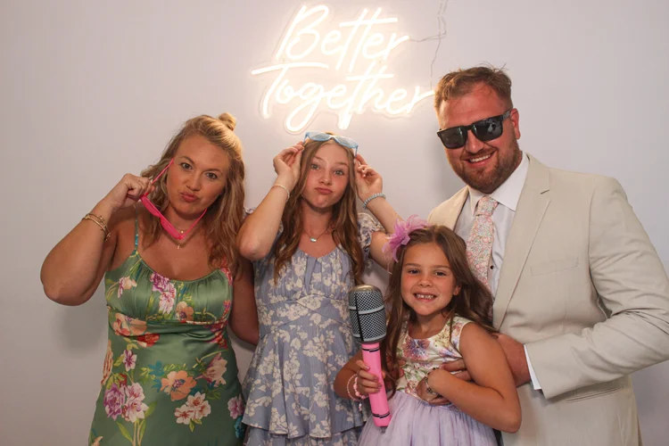

Behind the Lens
Meet Caitlin Gregory
Greensboro, NC family and senior photographer creating timeless, honest portraits for the meaningful seasons of life.
I am happy you are here
Photography should feel relaxed, honest, and deeply personal.
Photography, to me, is about more than how things look. It is about how they felt. My sessions are relaxed, honest, and centered on connection. When you look back on your images, you should remember the laughter, the comfort, and the season of life you were in.
My approach blends documentary storytelling with gently guided portraits, creating photographs that feel natural and emotionally rich. I specialize in family and senior photography in Greensboro, North Carolina, serving families and seniors in Summerfield, Oak Ridge, Stokesdale, and the surrounding Triad.
I do not create your story. I simply reflect it. From the first note to the final gallery, every step is intentionally simple, warm, and thoughtful.
Greensboro, NC Family & Senior Photographer



A Few Fun Facts
Kind, calm, and just the right amount of organized.
I call the Triad of North Carolina home, just north of Greensboro.
My style combines traditional, bold color with contemporary elements, blending timeless elegance with modern creativity.
I absolutely love an emotionally enduring black and white photograph.
My approach is unobtrusive, letting you enjoy your loved ones while I capture the magic as it unfolds.
With 10+ years of experience, I have developed a careful eye for detail and a knack for anticipating beautifully candid moments.
Before photography, I was a pediatric and OBGYN nurse. That experience shaped the patience and care I bring to every session.
I think we will capture many beautiful moments together.
Start Here
Tell me what season you want to remember.
You will hear back from me within 24 hours.
Ready when you are